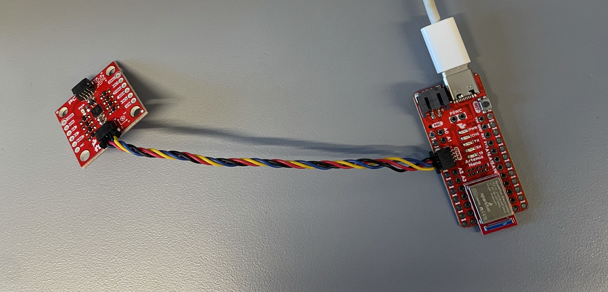
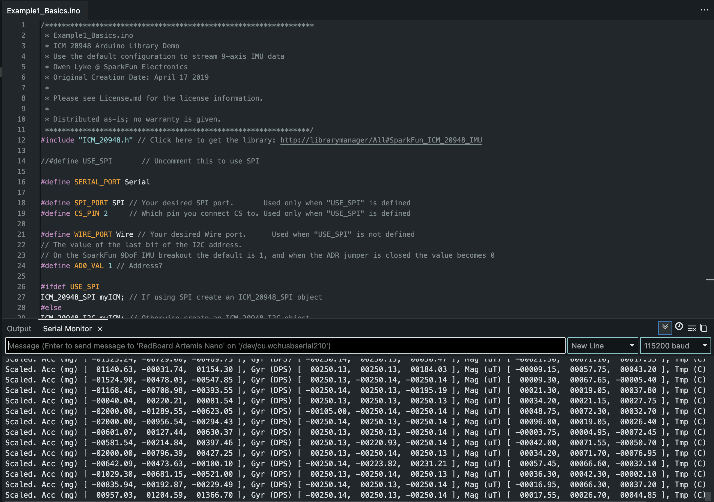
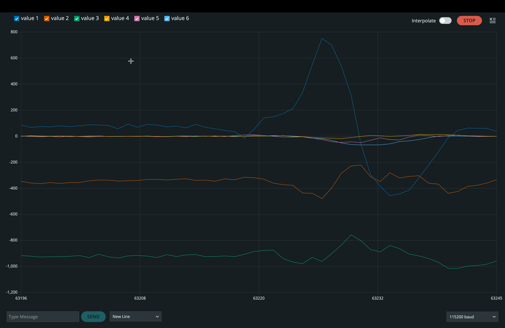
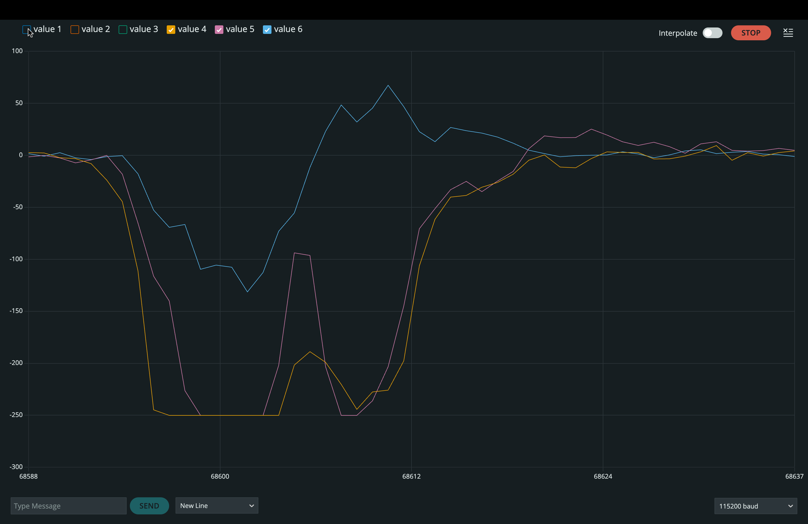
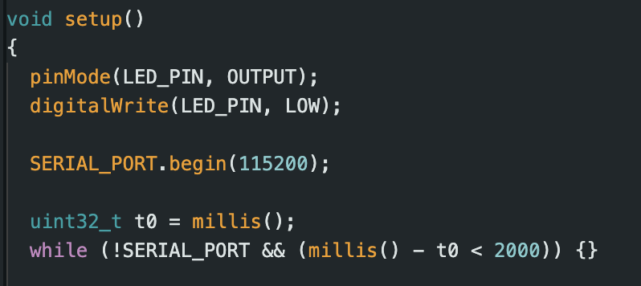

Home › Lab 2
Lab 2: IMU
Overview
Fill in a short overview of what you built, what you measured, and what you demonstrated.
Lab Tasks
Set up the IMU

Figure: Artemis to IMU wiring using Qwiic connectors.

Figure: SparkFun ICM-20948 example running and producing sensor output.
AD0_VAL definition
Fill in answer for AD0_VAL definition here.
Acceleration and gyroscope data discussion
Fill in answer for accelerometer and gyroscope discussion here.

Figure: Example accelerometer data while rotating, flipping, and accelerating the board.

Figure: Example gyroscope data while rotating, flipping, and accelerating the board.

Figure: Startup running indicator implementation (three slow blinks).
Accelerometer
Pitch and roll from accelerometer
Fill in the equations you used here. If you have an image of equations, link it below.

Figure: Pitch and roll equations used for accelerometer conversion.
Output at approximately -90, 0, +90 degrees
Insert a YouTube link to your demonstration video and summarize what you showed.
Video: Pitch and roll output demonstration near -90, 0, +90 degrees.
Accelerometer accuracy
Fill in answer for accelerometer accuracy discussion here.
Mention that you performed a two-point calibration and it was fairly accurate, without listing specific numbers.
Two-point calibration
Fill in calibration method summary here, including how you collected the two reference orientations and how you computed offset and scale.
Noise in the frequency spectrum
Fill in answer for frequency spectrum discussion here. State what data you recorded, what motion you induced, and what you observed.

Figure: Fourier transform magnitude spectrum of accelerometer signal.
Cutoff frequency choice
Fill in cutoff frequency reasoning here. Describe how the FFT guided the cutoff selection and the tradeoff between smoothness and lag.
Low-pass filter implementation
Fill in implementation details here. Include the filter equation and how you computed the parameters from sampling rate and cutoff.

Figure: Raw accelerometer-derived signal compared to low-pass filtered output.
Plotting in Python
Fill in a brief description of your Jupyter plotting workflow here. Mention what you plotted on the x-axis and y-axis.
Gyroscope
Pitch, roll, yaw from gyroscope
Fill in documentation for how you computed pitch, roll, and yaw from gyro rates here.
Use your attached equations image below.

Figure: Gyroscope equations used for pitch, roll, and yaw estimation.

Figure: Gyroscope angle outputs for different board orientations.
Comparison to accelerometer and filtered response
Fill in comparison discussion here. Describe differences in drift, noise, and response to vibration.
Sampling frequency effects
Fill in sampling frequency discussion here. Describe what you changed and what accuracy differences you observed.
Complementary filter
Fill in complementary filter design choices here, including the blend parameter and why you chose it.
Include evidence of working range and stability.

Figure: Complementary filter output compared to accelerometer-only and gyroscope-only estimates.
Sample Data and BLE Transfer
Speed up the main loop
Fill in summary of what you removed or changed to increase sampling speed here.
Mention removal of delays and reduction of prints.
Sampling speed measurement
Fill in measured sampling speed here. State your sampling rate and whether the loop ran faster than the IMU update rate.
Data storage design
Fill in justification here for one big array versus separate arrays.
Data types and memory
Fill in justification here for chosen data types and how many seconds fit in memory.

Figure: Evidence of time-stamped IMU data stored in arrays.

Figure: Evidence of at least 5 seconds of IMU data sent over Bluetooth to the computer.
Placeholder for a short snippet of relevant code or a link to a GitHub Gist.
Record a Stunt
Baseline driving and observations
Insert a YouTube link to your baseline driving video. Fill in discussion of what you observed.
Mention that you drove the car in a circle and what you expected the IMU to show.
Video: Baseline RC car driving.
Stunt video and observations
Insert a YouTube link to your stunt video. Fill in discussion of what happened and what the IMU data suggests.
Video: Recorded stunt.
Code Links
Include links to short, relevant code excerpts only.
IMU setup and plotting output
Filtering and complementary filter
Python analysis notebook
Link: YOUR_NOTEBOOK_LINK_HERE
Replace the placeholder image filenames with your actual saved figures if they differ. Current expected image files in this folder: L2_IMU_Connection.png, L2_IMU_Exmp.png, L2_Accel_Exmp.png, L2_Gyro_Exmp.png, L2_3_Blinks_Code.png.